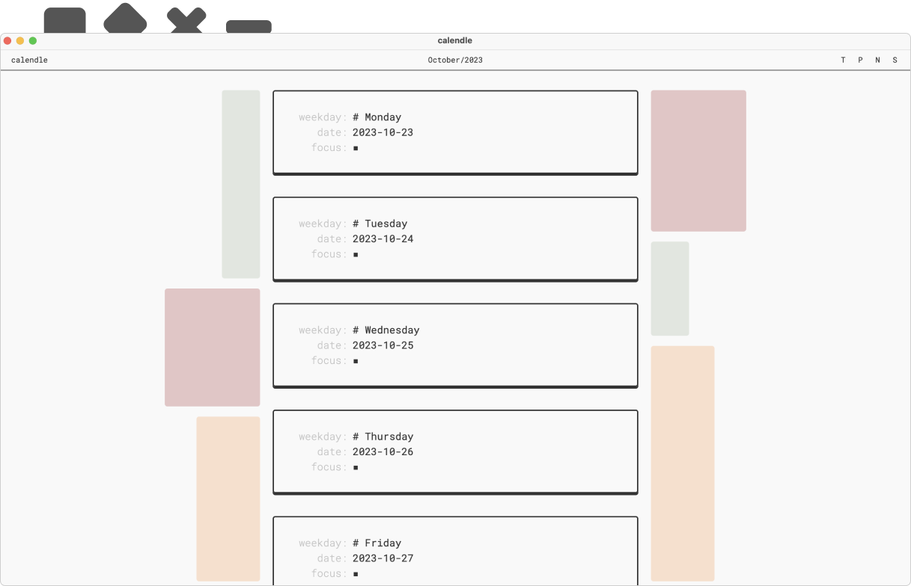
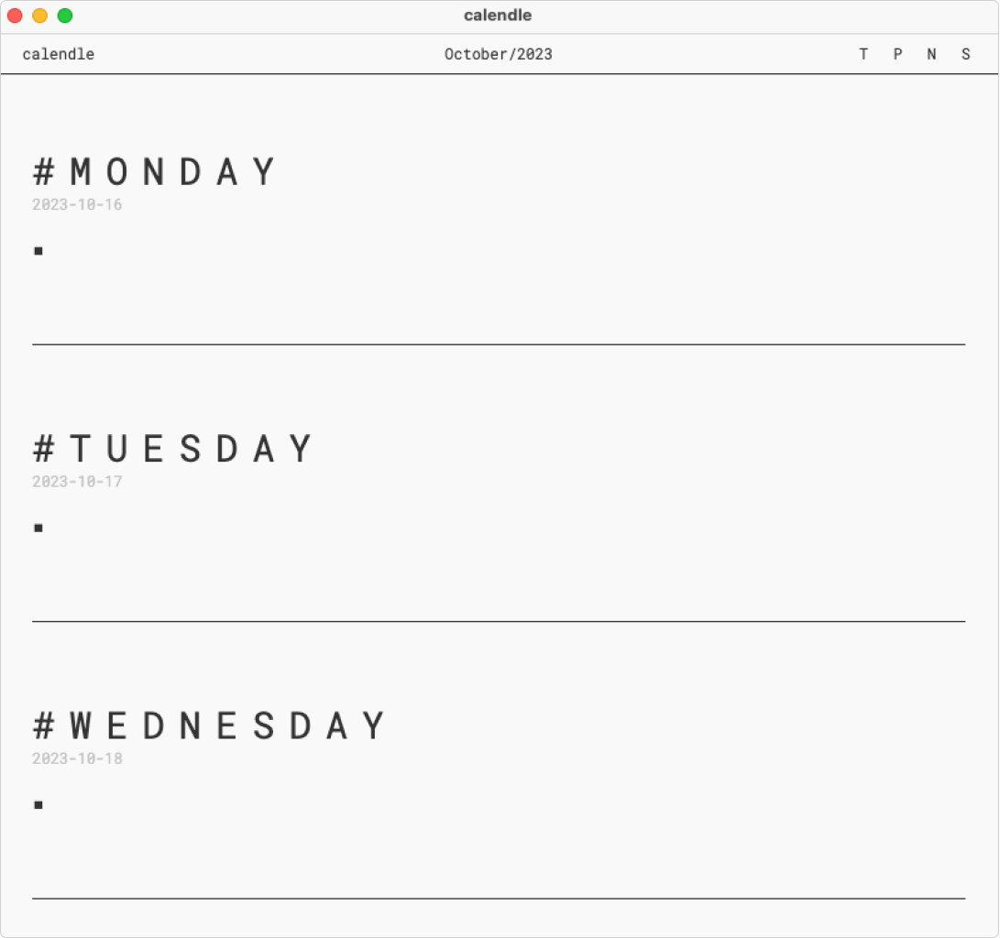
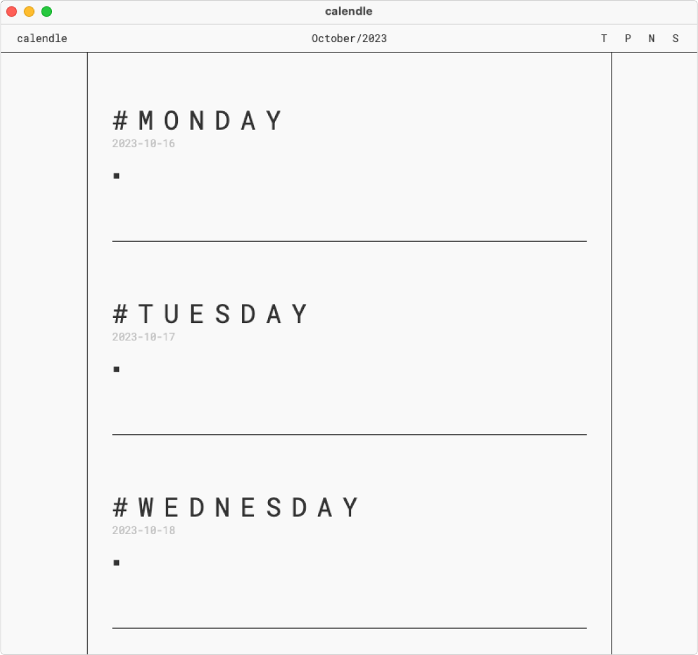
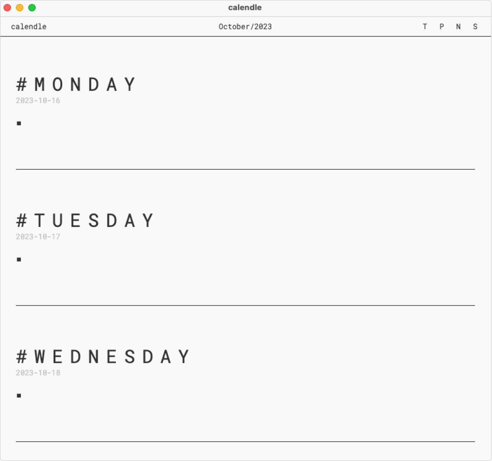
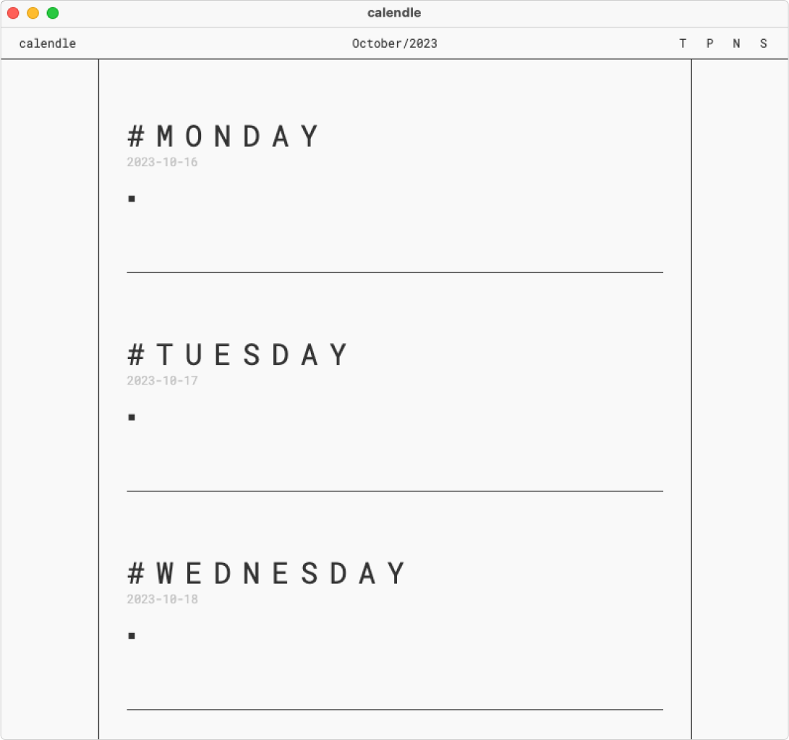

with a digital bullet journal and hotkey heavy controls.
welcome to calendle 👋
more accurate bullets
In addition to the typical to-do and done bullets, calendle offers
more bullets to make being productive more joyful.
▪ to-do
◆ to-focus
× done
× worked on it but didn't finished
» moved to future date
« moved to someday section
– note
different modes
The typical and most common mode is the writing/editing mode. But
calendle includes another mode too. The hover mode.
It allows you to move fast through your bullets with the keyboard.
It allows you to move bullets between weekdays or to the someday
section. You can easily copy-paste bullets and create new ones. It
is inspired by VIM.
flowlike movement with hotkeys
Calendle has build-in hotkeys. So you never have to lift your hands
form the keyboard. Just ignore the mouse. The available hotkeys are:
enter:add bullet
arrow up:move up
arrow down:move down
meta+i:iterate through bullet
types
meta+j:move bullet down
meta+k:move bullet up
meta+h:go to previous week
meta+l:go to next week
meta+t:go to current week
esc:activate hover mode
additionally, in hover mode:
i:deactivate hover mode
a:deactivate hover mode
j:move down
k:move up
d:delete bullet
y:copy bullet
p:paste deleted/copied bullet
o:add bullet and deactivate
hover mode
prioritize privacy
No sign up. No sign in. A simple download. And, all of your data is
stored locally on your machine.
the calendle app
A simple, joyful, bullet-journal-like productivity app. It's free and
available for
MacOS.
If you like calendle and want to support it, you can donate a cup
of coffee (ko-fi comming soon).

hidden designs
You can change the design and adjust it to one of five available
options. But the buttons to toggle between designs are hidden.


 


